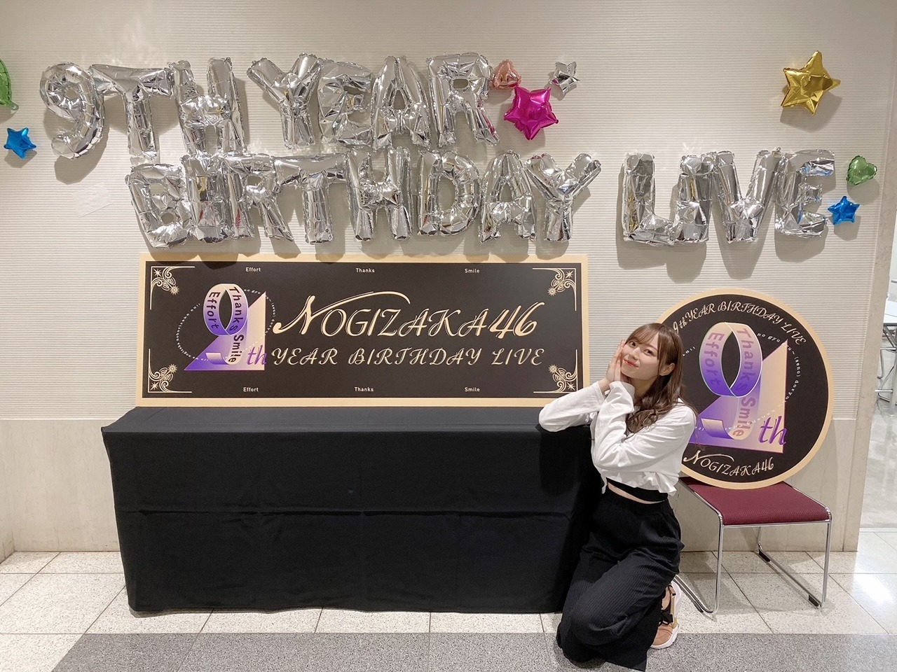
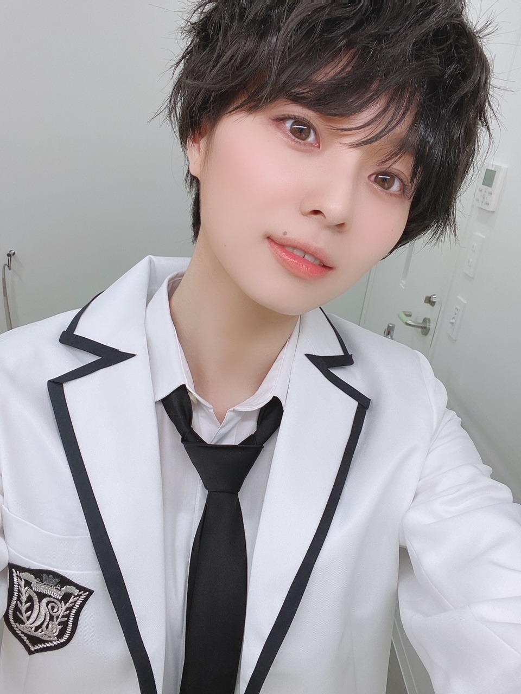
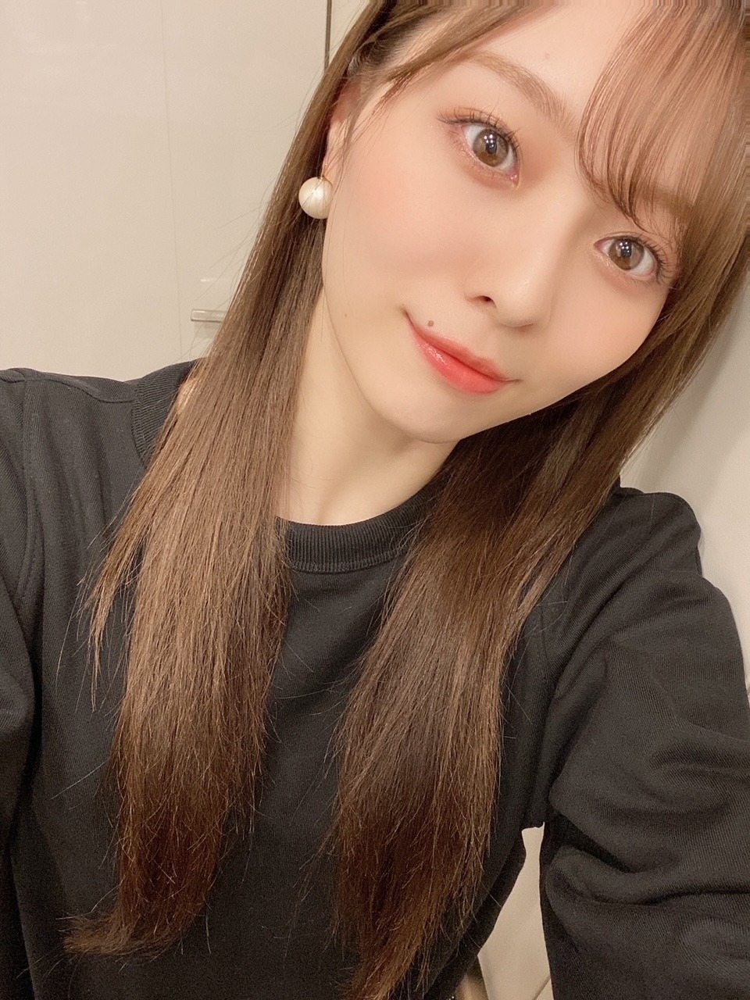

しわくちゃに傷んだ
気づいたらお久しぶりになってしまって...
あせあせ。
ありがとうございました。
楽しんで頂けましたでしょうか？
この日にやるから意味があると
大切な日だからこそ
ここで途切れさせたくないという想いは
開催できて本当に良かった。
現地でリハーサルして
初めて見えた映像と光との完成系。
美しくて 驚いた~！スタッフさん方は
こんなにもスケールの大きく繊細なものが、
この完成系が明確に見えていたのだと思うと
本当に凄いなあ。
制作に関わってくださったスタッフの皆様には
本当に感謝でいっぱいです。
ありがとうございました！
一人一人が色んな想いを背負って
要所要所で見える愛の溢れる空間に
心癒されてばかりでした。
皆の乃木坂への想いが
特別な一日にしてくれたんだと思います。

ぱちぱち！
９周年。
私が加入してお祝いするのは５回目。
前夜祭で振り返って、
いろんな想いがぶわあ！っと
溢れちゃって溢れちゃって。
一人で過去を辿ることは頻繁にありますが
一人でなくて、皆で、
確実な映像と記憶とともに
振り返る時間って 実は
すごく大切なのかもしれません。
これもまた、思い出すきっかけがなくては
いけなかったものたち！
色んなプレッシャーや責任や重圧、
自分自身と向き合い 戦い
それを乗り越えるべく準備を進めましたが
時折見える自分の弱さや脆さ、
プラスだけでは進めないマイナスな感情も
全部全部必要であり
これを乗り越えてこその
観てくださった皆様がいて
本当にありがとうございました！
これからも 一曲一曲を
大切に、大切に歌っていきます。
来年は１０周年です！
良きバトンを繋いでいくぞ~
TGC！
楽しかったです~
R4Gさんのステージを
歩かせていただきました！
久しぶりでしたが S/Sはやっぱり
色味が可愛くて気分も上がります。
春服チェックしなきゃ~！と思い
ネットでぽちぽち探してます。
春らしいアウターが欲しいです~
あ、そうそう
スキッツで
梅澤みなと になりました
男装初挑戦でした。
あ~、身長あって嬉しい！と
思えた瞬間でした（笑）

ウィッグ被った瞬間
爆笑しました（笑）
新鮮すぎてひたすら笑ってました、はは
N4のみんなとの 初対面でもまた爆笑（笑）
楽しい収録でした！
レアだし中々無い機会なので
たくさん写真とりました！
載せるの恥ずかしいけどせっかくなので！
またどこかで会えたら！
来週のスキッツでは
ギャルになってます！
告知◎
▽３／１３ フジテレビ系 13:30~14:30
「コレで豪邸建てました」
とっても楽しい収録だった~！
アンタッチャブルさんと、若槻千夏さんと
ご一緒させて頂きました！
昔からテレビで観ていた方々と
ご一緒できる喜びと緊張。
くまたんの スタンプ、
学生の頃からずっと使ってるんです~♪
ぜひ！
▽「with」５月号 発売中です！
こんまりさんの本を参考に
着回ししています~！
撮影楽しかったなあ。
外での撮影は 濡れている地面が
凍っていたくらいの寒さの中
スタッフの皆様と一緒に頑張りました☀︎ふふ
オンライン ミート&グリート
毎週楽しいです
ありがとうございます！
なんだか本当にお家で
テレビ電話している感覚なので
素になりすぎて 面白くなります。
今週末もよろしくです~！
ホワイトデーなので チョコ待ってるね♥なんちゃって

では！
また書きます
話が尽きないって
幸せですよね~！良い！
間がなく 隙間がなく 無言が無く
次々交わされる言葉たち！最高！
それが一方通行ではなく
お互いに なら、尚いい！
ちなみに今食べたいものは
じゃがバタ塩辛のせです。では
Original：https://www.nogizaka46.com/s/n46/diary/detail/60346?ima=4935&cd=MEMBER